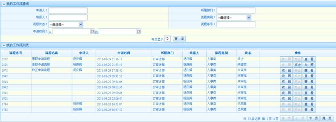
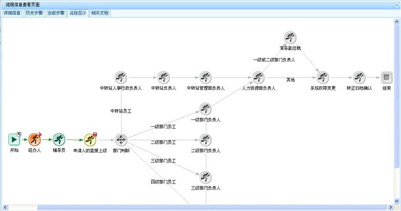

| 4.1.2 我发起过的流程 |
列表形式列出我发起过的流程。对我发起的流程可以做【收回】【终止】【查看】【办理】等操作：
收回：经办人提交流程，还没有经过经办人下一个环节审批时，经办人可以进行流程收回操作。收回后的流程可以进行【办理】【终止】【查看】等操作。
终止：对收回的流程或者是审批人退回的流程，经办人可以进行终止操作，终止后的流程只能进行查看，不能再进行业务办理。
查看：对流程及流程中的表单数据进行详细展示。流程信息查看包含【详细信息】【历史步骤】【当前步骤】【流程图示】【相关文档】等信息的查看。
办理：收回后的流程和审批人退回的流程可以进行办理，修改表单信息后再次提交流程。

我发起过的流程界面

流程信息查看总界面